EGMn: The Sequential Endogenous Grid Method
IAAE 2024 – Thessaloniki, Greece
![]()
June 26, 2024
Bellman’s Priciple of Optimality
An optimal policy has the property that whatever the initial state and initial decision are, the remaining decisions must constitute an optimal policy with regard to the state resulting from the first decision.
Motivation
- Structural modeling of decision making under uncertainty
- Modern Economics requires solving complex problems that are computationally challenging and time consuming
Main Contributions
-
Extending the Endogenous Grid Method (EGM) to models with multiple states and controls
-
Using Gaussian Process Regression (ML) to handle unstructured grids
A simple consumption-savings problem
Agent maximizes present discounted value (PDV) of lifetime utility
\[\begin{equation} \max_{c_t} \sum_{t=0}^{\infty} \beta^t \mathrm{u}(c_t) \end{equation}\]
Recursive Bellman equation
\[\begin{equation} \begin{split} v_t(m_t) & = \max_{c_t} \mathrm{u}(c_t) + \beta\mathbb{E}_t \left[ v_{t+1}(m_{t+1}) \right] \\ \text{s.t.} & \quad 0 < c_t \leq m_t \\ a_t & = m_t - c_t \\ m_{t+1} & = \mathsf{R}a_t + \theta_{t+1} \end{split} \end{equation}\]
A simple consumption-savings problem
Recursive Bellman equation
\[\begin{equation} \begin{split} v_t(m_t) & = \max_{c_t} \mathrm{u}(c_t) + \beta\mathbb{E}_t \left[ v_{t+1}(m_{t+1}) \right] \\ \text{s.t.} & \quad 0 < c_t \leq m_t \\ a_t & = m_t - c_t \\ m_{t+1} & = \mathsf{R}a_t + \theta_{t+1} \end{split} \end{equation}\]
How do we solve this problem?
-
Value Function Iteration (VFI)
- Discretize state space (interpolation)
- Grid search optimization (brute force, iterative)
The Endogenous Grid Method by Carroll (2006)
\[\begin{equation} v_t(m_t) = \max_{c_t} \mathrm{u}(c_t) + \beta\mathbb{E}_t \left[ v_{t+1}(\mathsf{R}(m_t - c_t) + \theta_{t+1}) \right] \end{equation}\]
\[\begin{equation} u'(c_t) = \beta\mathsf{R}\mathbb{E}_t \left[ v_{t+1}'(\mathsf{R}(m_t - c_t) + \theta_{t+1}) \right] \end{equation}\]
\[\begin{equation} \mathfrak{c}_t([\mathrm{a}]) = \mathrm{u}'^{-1} \left( \beta\mathsf{R}\mathbb{E}_t \left[ v_{t+1}'(\mathsf{R}[\mathrm{a}]+ \theta_{t+1}) \right] \right) \end{equation}\]
\[\begin{equation} \mathfrak{m}_t([\mathrm{a}]) = \mathfrak{c}_t([\mathrm{a}]) + [\mathrm{a}] \end{equation}\]
Contribution: \((\mathfrak{m}_t, \mathfrak{c}_t) \quad \Rightarrow \quad \hat{c}_t(\mathfrak{m}_t) = \mathfrak{c}_t\)
- Simple: Inverted Euler equation
- Fast: No root-finding or grid search optimization required
- Efficient: Finds exact solution at each gridpoint
Limitations of EGM
EGMn: The Sequential Endogenous Grid Method
- Insight: Problems in which agent makes several simultaneous choices can be decomposed into sequence of problems
- Challenge: Rectilinear exogenous grid results in unstructured endogenous grid
- Solution: Use machine learning to interpolate on unstructured grids
Contribution:
- Simple, Fast, Efficient: Inherits properties of EGM
- Multi-dimensional: Can be used for problems with multiple state variables and decisions
- Cutting-edge: Functional approximation and uncertainty quantification approach using Gaussian Process Regression
A consumption - leisure problem
Agent maximizes PDV of lifetime utility
\[\begin{equation} \mathrm{V}_0(B_0, \theta_0) = \max_{C_{t}, Z_{t}} \mathbb{E}_{t} \left[ \sum_{t = 0}^{T} \beta^{t} \mathrm{u}(C_{t}, Z_{t}) \right] \end{equation}\]
Recursive Bellman equation in normalized form:
\[\begin{equation} \begin{split} \mathrm{v}_{t}(b_{t}, \theta_{t}) & = \max_{\{c_{t}, z_{t}\}} \mathrm{u}(c_{t}, z_{t}) + \beta\mathbb{E}_{t} \left[ \Gamma_{t+1}^{1-\rho} \mathrm{v}_{t+1} (b_{t+1}, \theta_{t+1}) \right] \\ \ell_{t} & = 1 - z_{t} \\ m_{t} & = b_{t} + \theta_{t} \mathsf{w}\ell_{t} \\ a_{t} & = m_{t} - c_{t} \\ b_{t+1} & = a_{t} \mathsf{R}/ \Gamma_{t+1} \end{split} \end{equation}\]
A consumption - leisure problem
Recursive Bellman equation in normalized form:
\[\begin{equation} \begin{split} \mathrm{v}_{t}(b_{t}, \theta_{t}) & = \max_{\{c_{t}, z_{t}\}} \mathrm{u}(c_{t}, z_{t}) + \beta\mathbb{E}_{t} \left[ \Gamma_{t+1}^{1-\rho} \mathrm{v}_{t+1} (b_{t+1}, \theta_{t+1}) \right] \\ \ell_{t} & = 1 - z_{t} \\ m_{t} & = b_{t} + \theta_{t} \mathsf{w}\ell_{t} \\ a_{t} & = m_{t} - c_{t} \\ b_{t+1} & = a_{t} \mathsf{R}/ \Gamma_{t+1} \end{split} \end{equation}\]
where
\[\begin{equation} \mathrm{u}(C, Z) = u(C) + h(Z) = \frac{C^{1-\rho}}{1-\rho} + \nu^{1-\rho} \frac{Z^{1-\zeta}}{1-\zeta} \end{equation}\]
Breaking up the problem into sequences
Starting from the beginning of the period, we can define the labor-leisure problem as
\[\begin{equation} \begin{split} \mathrm{v}_{t}(b_{t}, \theta_{t}) & = \max_{ z_{t}} h(z_{t}) + \tilde{\mathfrak{v}}_{t} (m_{t}) \\ & \text{s.t.} \\ 0 & \leq z_{t} \leq 1 \\ \ell_{t} & = 1 - z_{t} \\ m_{t} & = b_{t} + \theta_{t} \mathsf{w}\ell_{t}. \end{split} \end{equation}\]
The pure consumption-saving problem is then
\[\begin{equation} \begin{split} \tilde{\mathfrak{v}}_{t}(m_{t}) & = \max_{c_{t}} u(c_{t}) + \beta\mathfrak{v}_{t}(a_{t}) \\ & \text{s.t.} \\ 0 & \leq c_{t} \leq m_{t} \\ a_{t} & = m_{t} - c_{t}. \end{split} \end{equation}\]
Breaking up the problem into sequences
Starting from the beginning of the period, we can define the labor-leisure problem as
\[\begin{equation} \begin{split} \mathrm{v}_{t}(b_{t}, \theta_{t}) & = \max_{ z_{t}} h(z_{t}) + \tilde{\mathfrak{v}}_{t} (m_{t}) \\ & \text{s.t.} \\ 0 & \leq z_{t} \leq 1 \\ \ell_{t} & = 1 - z_{t} \\ m_{t} & = b_{t} + \theta_{t} \mathsf{w}\ell_{t}. \end{split} \end{equation}\]
The pure consumption-saving problem is then
\[\begin{equation} \begin{split} \tilde{\mathfrak{v}}_{t}(m_{t}) & = \max_{c_{t}} u(c_{t}) + \beta\mathfrak{v}_{t}(a_{t}) \\ & \text{s.t.} \\ 0 & \leq c_{t} \leq m_{t} \\ a_{t} & = m_{t} - c_{t}. \end{split} \end{equation}\]
Finally, the post-decision value function is
\[\begin{equation} \begin{split} \mathfrak{v}_{t}(a_{t}) & = \mathbb{E}_{t} \left[ \Gamma_{t+1}^{1-\rho} \mathrm{v}_{t+1}(b_{t+1}, \theta_{t+1}) \right] \\ & \text{s.t.} \\ b_{t+1} & = a_{t} \mathsf{R}/ \Gamma_{t+1}. \end{split} \end{equation}\]
Solving Labor-Leisure (EGM, Again)
We can condense the labor-leisure problem into a single equation:
\[\begin{equation} \mathrm{v}_{t}(b_{t}, \theta_{t}) = \max_{ z_{t}} h(z_{t}) + \tilde{\mathfrak{v}}_{t}(b_{t} + \theta_{t} \mathsf{w}(1-z_{t})) \end{equation}\]
Interior solution must satisfy the first-order condition:
\[\begin{equation} h'(z_{t}) = \tilde{\mathfrak{v}}_{t}'(m_{t}) \theta_{t} \mathsf{w} \end{equation}\]
EGM consists of inverting the first-order condition to find leisure function:
\[\begin{equation} \mathfrak{z}_{t}([\mathrm{m}], [\mathrm{\theta}]) = h'^{-1}\left( \tilde{\mathfrak{v}}_{t}'([\mathrm{m}]) \mathsf{w}[\mathrm{\theta}]\right) \end{equation}\]
Solving Labor-Leisure (EGM, Again)
Using market resources condition we obtain endogenous grid:
\[\mathfrak{b}_{t}([\mathrm{m}], [\mathrm{\theta}]) = [\mathrm{m}]- [\mathrm{\theta}]\mathsf{w}(1-\mathfrak{z}_{t}([\mathrm{m}], [\mathrm{\theta}]))\]
So now we have the triple \((\mathfrak{z}_t, \mathfrak{b}_t, \theta)\), where \(\mathfrak{z}_t\) is the unconstrained approx. of optimal leisure for each \((\mathfrak{b}_t, \theta)\) corresponding to each \(([\mathrm{m}], [\mathrm{\theta}])\). Generally, we can construct an interpolator as follows:
\[z_t(\mathfrak{b}_t, \theta) = \mathfrak{z}_t\]
Actual leisure function is bounded between 0 and 1:
\[\begin{equation} \hat{z}_{t}(b, \theta) = \max \left[ \min \left[ z_{t}(b, \theta), 1 \right], 0 \right] \end{equation}\]
Pretty Simple, Right?
What is the problem?
|
Exogenous Rectangular Grid 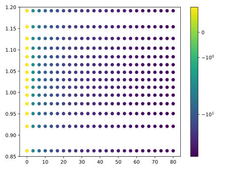 |
Endogenous Curvilinear Grid 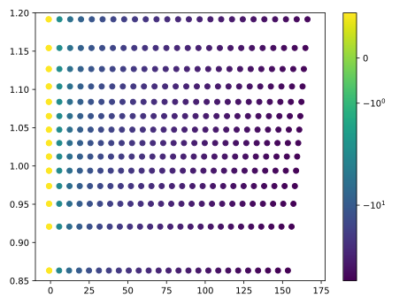 |
- One solution: Curvilinear Interpolation by White (2015)
A more complex problem
Consumption - Pension Deposit Problem as in Druedahl and Jørgensen (2017)
\[\begin{equation} \begin{split} \mathrm{v}_{t}(m_{t}, n_{t}) & = \max_{c_{t}, d_{t}} u(c_{t}) + \beta\mathbb{E}_{t} \left[ \mathrm{v}_{t+1}(m_{t+1}, n_{t+1}) \right] \\ & \text{s.t.} \quad c_{t} > 0, \quad d_{t} \ge 0 \\ a_{t} & = m_{t} - c_{t} - d_{t} \\ b_{t} & = n_{t} + d_{t} + g(d_{t}) \\ m_{t+1} & = a_{t} \mathsf{R}+ \theta_{t+1} \\ n_{t+1} & = b_{t} \mathbf{R}_{t+1} \end{split} \end{equation}\]
where
\[\begin{equation} \mathrm{u}(c) = \frac{c^{1-\rho}}{1-\rho} \qquad \text{and} \qquad \mathrm{g}(d) = \chi\log(1+d). \end{equation}\]
is a tax-advantaged premium on pension contributions.
G2EGM from
Druedahl and Jørgensen (2017)
-
If we try to use EGM:
- 2 first order conditions
- multiple constraints difficult to handle
- segments: combinations of first order conditions and constraints
- \(2^{d}\) segments where \(d\) is number of control variables
- requires local triangulation interpolation
Breaking up the problem makes it easier
Consider the problem of a consumer who chooses how much to put into a pension account:
\[\begin{equation} \begin{split} \mathrm{v}_{t}(m_{t}, n_{t}) & = \max_{d_{t}} \tilde{\mathfrak{v}}_{t}(l_{t}, b_{t}) \\ & \text{s.t.} \quad 0 \le d_{t} \le m_t \\ l_{t} & = m_{t} - d_{t} \\ b_{t} & = n_{t} + d_{t} + g(d_{t}) \end{split} \end{equation}\]
After, the consumer chooses how much to consume out of liquid savings:
\[\begin{equation} \begin{split} \tilde{\mathfrak{v}}_{t}(l_{t}, b_{t}) & = \max_{c_{t}} u(c_{t}) + \beta\mathrm{w}_{t}(a_{t}, b_{t}) \\ & \text{s.t.} \quad 0 < c_{t} \le m_t \\ a_{t} & = l_{t} - c_{t} \end{split} \end{equation}\]
Breaking up the problem makes it easier
Consider the problem of a consumer who chooses how much to put into a pension account:
\[\begin{equation} \begin{split} \mathrm{v}_{t}(m_{t}, n_{t}) & = \max_{d_{t}} \tilde{\mathfrak{v}}_{t}(l_{t}, b_{t}) \\ & \text{s.t.} \quad 0 \le d_{t} \le m_t \\ l_{t} & = m_{t} - d_{t} \\ b_{t} & = n_{t} + d_{t} + g(d_{t}) \end{split} \end{equation}\]
After, the consumer chooses how much to consume out of liquid savings:
\[\begin{equation} \begin{split} \tilde{\mathfrak{v}}_{t}(l_{t}, b_{t}) & = \max_{c_{t}} u(c_{t}) + \beta\mathrm{w}_{t}(a_{t}, b_{t}) \\ & \text{s.t.} \quad 0 < c_{t} \le m_t \\ a_{t} & = l_{t} - c_{t} \end{split} \end{equation}\]
And the post-decision value function is defined as:
\[\begin{equation} \begin{split} \mathrm{w}_t(a_t, b_t) & = \mathbb{E}_{t} \left[ \mathrm{v}_{t+1}(m_{t+1}, n_{t+1}) \right] \\ & \text{s.t.} \\ m_{t+1} & = a_{t} \mathsf{R}+ \theta_{t+1} \\ n_{t+1} & = b_{t} \mathbf{R}_{t+1} \end{split} \end{equation}\]
Breaking up the problem makes it easier
Consider the problem of a consumer who chooses how much to put into a pension account:
\[\begin{equation} \begin{split} \mathrm{v}_{t}(m_{t}, n_{t}) & = \max_{d_{t}} \tilde{\mathfrak{v}}_{t}(l_{t}, b_{t}) \\ & \text{s.t.} \quad 0 \le d_{t} \le m_t \\ l_{t} & = m_{t} - d_{t} \\ b_{t} & = n_{t} + d_{t} + g(d_{t}) \end{split} \end{equation}\]
After, the consumer chooses how much to consume out of liquid savings:
\[\begin{equation} \begin{split} \tilde{\mathfrak{v}}_{t}(l_{t}, b_{t}) & = \max_{c_{t}} u(c_{t}) + \beta\mathrm{w}_{t}(a_{t}, b_{t}) \\ & \text{s.t.} \quad 0 < c_{t} \le m_t \\ a_{t} & = l_{t} - c_{t} \end{split} \end{equation}\]
And the post-decision value function is defined as:
\[\begin{equation} \begin{split} \mathrm{w}_t(a_t, b_t) & = \mathbb{E}_{t} \left[ \mathrm{v}_{t+1}(m_{t+1}, n_{t+1}) \right] \\ & \text{s.t.} \\ m_{t+1} & = a_{t} \mathsf{R}+ \theta_{t+1} \\ n_{t+1} & = b_{t} \mathbf{R}_{t+1} \end{split} \end{equation}\]
Steps:
- Compute \(\mathrm{w}_t(a_t, b_t)\)
- Solve consumption problem (EGM)
- Solve pension problem (EGM, again)
- Done!
Solving the pension problem
The pension problem, more compactly
\[\begin{equation} \mathrm{v}_{t}(m_{t}, n_{t}) = \max_{d_{t}} \tilde{\mathfrak{v}}_{t}(m_{t} - d_{t}, n_{t} + d_{t} + \mathrm{g}(d_{t})) \end{equation}\]
Interior solution must satisfy the first-order condition:
\[\begin{equation} \mathrm{g}'(d_{t}) = \frac{\tilde{\mathfrak{v}}_{t}^{l}(l_{t}, b_{t})}{\tilde{\mathfrak{v}}_{t}^{b}(l_{t}, b_{t})} - 1 \end{equation}\]
Inverting, we can obtain the optimal choice of \(d_{t}\):
\[\begin{equation} \mathfrak{d}_{t}(l_{t}, b_{t}) = \mathrm{g}'^{-1}\left( \frac{\tilde{\mathfrak{v}}_{t}^{l}(l_{t}, b_{t})}{\tilde{\mathfrak{v}}_{t}^{b}(l_{t}, b_{t})} - 1 \right) \end{equation}\]
Solving the pension problem
Inverting, we can obtain the optimal choice of \(d_{t}\):
\[\begin{equation} \mathfrak{d}_{t}(l_{t}, b_{t}) = \mathrm{g}'^{-1}\left( \frac{\tilde{\mathfrak{v}}_{t}^{l}(l_{t}, b_{t})}{\tilde{\mathfrak{v}}_{t}^{b}(l_{t}, b_{t})} - 1 \right) \end{equation}\]
Using resource constraints we obtain endogenous grids:
\[\begin{equation} \mathfrak{n}_{t}(l_{t}, b_{t}) = b_{t} - \mathfrak{d}_{t}(l_{t}, b_{t}) - \mathrm{g}(\mathfrak{d}_{t}(l_{t}, b_{t})) \\ \mathfrak{m}_{t}(l_{t}, b_{t}) = l_{t} + \mathfrak{d}_{t}(l_{t}, b_{t}) \end{equation}\]
Now we have the triple \(\{\mathfrak{m}_t, \mathfrak{n}_t, \mathfrak{d}_t\}\) where \(\mathfrak{d}_t\) is the unconstrained approx. of optimal deposit for each \((\mathfrak{m}_t, \mathfrak{n}_t)\) corresponding to each \((l_t, b_t)\). Generally, we can construct an interpolator as follows:
\[\begin{equation} \hat{d_t}(\mathfrak{m}_t, \mathfrak{n}_t) = \begin{cases} 0 & \text{if } \mathfrak{d}_t < 0 \\ \mathfrak{d}_t & \text{if } 0 \le \mathfrak{d}_t \le \mathfrak{m}_t \\ \mathfrak{m}_t & \text{if } \mathfrak{d}_t > \mathfrak{m}_t \end{cases} \end{equation}\]
Unstructured Grids
Problem: Rectilinear exogenous grid results in unstructured endogenous grid
Exogenous Rectangular Grid
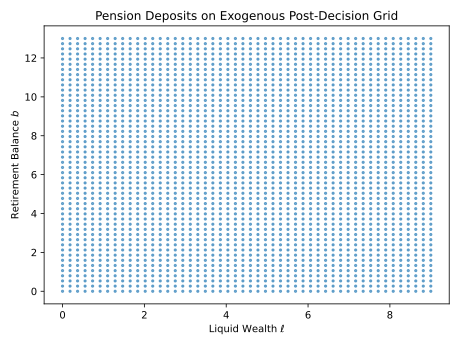
Endogenous Unstructured Grid
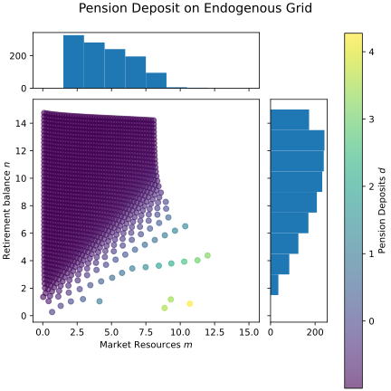
How do we interpolate on this grid?
Functional Approximation
Bilinear Interpolation
Curvilinear (Warped) Grid Interpolation
See: White (2015)
What about Unstructured Grids?
See: Ludwig and Schön (2018)
Artificial Neural Networks
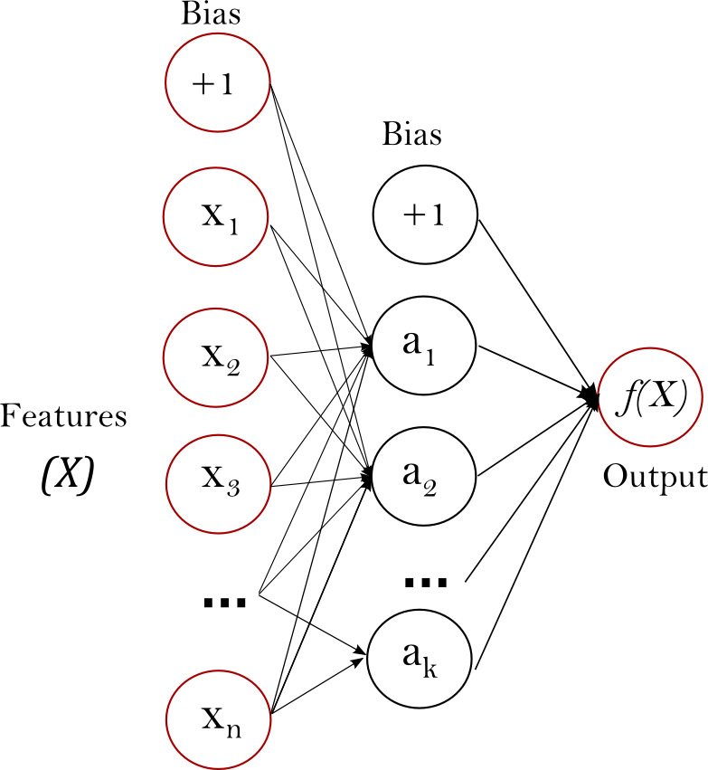
Artificial Neural Networks
- Based on biological neural pathways (neurons in a brain)
- Learns function \(f(X): R^n \rightarrow R^m\)
-
Consists of
- input (features) \(X\)
- hidden layers \(g(\cdots)\)
- output (target) \(y = f(X)\)
- Hidden layers can have many nodes
- Neural nets can have many hidden layers (deep learning)
Gaussian Process Regression
A Gaussian Process is a probability distribution over functions
\[\begin{equation} \begin{gathered} f(x) \sim \mathcal{GP}(m(x), k(x, x')) \\ \text{where} \quad m(x) = \mathbb{E}[f(x)] \\ \text{and} \quad k(x, x') = \mathbb{E}[(f(x) - m(x))(f(x') - m(x'))] \end{gathered} \end{equation}\]
A Gaussian Process Regression is used to find the function that best fits a set of data points
\[\begin{equation} \mathbb{P}(\mathbf{f} | \mathbf{X}) = \mathcal{N}(\mathbf{f} | \mathbf{m}, \mathbf{K}) \end{equation}\]
I use standard covariance function
\[\begin{equation} k(\mathbf{x}_i, \mathbf{x}_j) = \sigma^2_f \exp\left(-\frac{1}{2l^2} (\mathbf{x}_i - \mathbf{x}_j)' (\mathbf{x}_i - \mathbf{x}_j)\right). \end{equation}\]
Approximation
Note
Gaussian Processes
- mathematically equivalent to neural networks with an infinite width
- do not require as much data as neural networks
- offers uncertainty quantification of the mean function
- can be used to approximate any function arbitrarily closely
Universal Approximation Theorem
A single hidden-layer ANN can approximate any continuous function arbitrarily closely as the number of neurons in the hidden layer increases.
An example
Consider the true function \(f(x) = x \cos(1.5x)\) sampled at random points
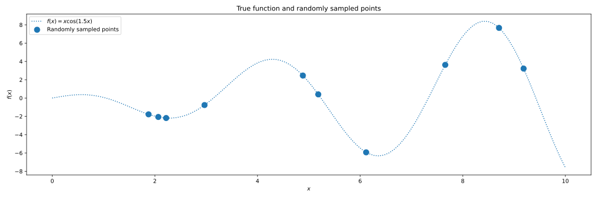True Function
An example
A random sample of the GP posterior distribution of functions
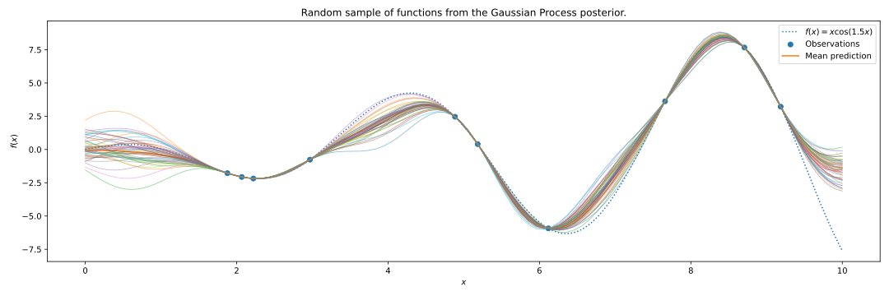Posterior Sample
An example
Gaussian Process Regression finds the function that best fits the data
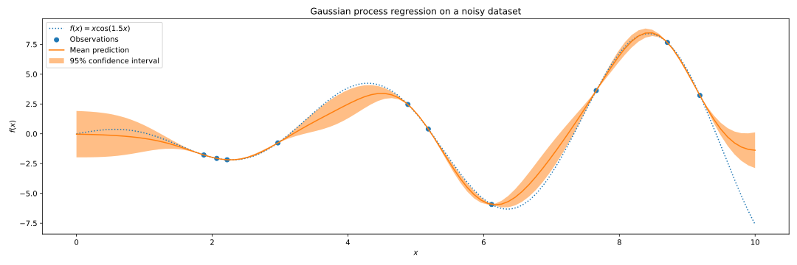-
Gaussian Process Regression gives us
- Mean function of the posterior distribution
- Uncertainty quantification of the mean function
- Can be useful to predict where we might need more points and update the grid
Back to the model
Second Stage Pension Endogenous Grid
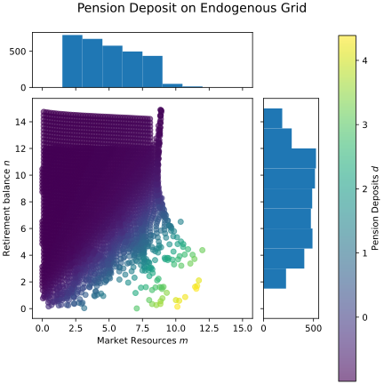
Some Results
Consumption Function
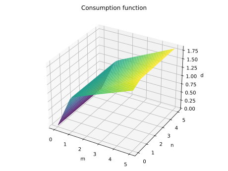
Deposit Function
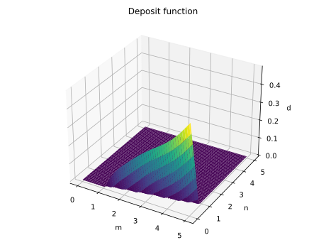
3 decisions: 2-asset HANK with labor
\[\begin{align} V_t(e, b_{-}, a_{-}) &= \max_{c, n, b, a} \left\{\frac{c^{1-\sigma}}{1-\sigma} - \varphi \frac{n^{1+\nu}}{1+\nu} + \beta \mathbb{E}_t\left[V_{t+1}(e', b, a)|e \right] \right\} \\ c + a + b&= w_t e n + (1 + r_t^a)a_{-} + (1 + r_t^b)b_{-} - \Psi(a, a_{-}) \\ a &\geq \underline{a}, \quad b \geq \underline{b} \end{align}\]
3 decisions: 2-asset HANK with labor
\[\begin{align} v_t^0(e,b_{-}, a_{-}) &= \max_{n} \left\{ -\varphi \frac{n^{1+\nu}}{1+\nu} + v_t^1(e,m, a_{-}) \right\} \\ m &= w_t e n + (1 + r_t^a)a_{-} + (1 + r_t^b)b_{-} \end{align}\]
\[\begin{align} v_t^1(e,m,a_{-}) &= \max_{a} v_t^2(e,\ell,a) \\ \ell + a &= m - \Psi(a, a_{-}) \end{align}\]
\[\begin{align} v_t^2(e,\ell,a) &= \max_{c,b} \left\{\frac{c^{1-\sigma}}{1-\sigma} + \beta v_t^3(e,b,a) \right\}\\ c + b &= \ell \end{align}\]
\[\begin{align} v_t^3(e,b,a) = \mathbb{E}_t\left[V_{t+1}(e', b, a)|e \right] \end{align}\]
Conditions for using Sequential EGM
-
Model must be
- concave
- differentiable
- continuous
- separable
Need an additional function to exploit invertibility
Examples in this paper:
-
Separable utility function
- \(\mathrm{u}(c, z) = \mathrm{u}(c) + h(z)\)
-
Continuous and differentiable transition
- \(b_{t} = n_{t} + d_{t} + g(d_{t})\)
Future work
- Work out abstract class of models that can use EGM\(^n\)
- Use GPUs to compare time/accuracy trade off
- Test out model with more choices
Thank you!
engine: github.com/econ-ark/HARK
References

Powered by Econ-ARK